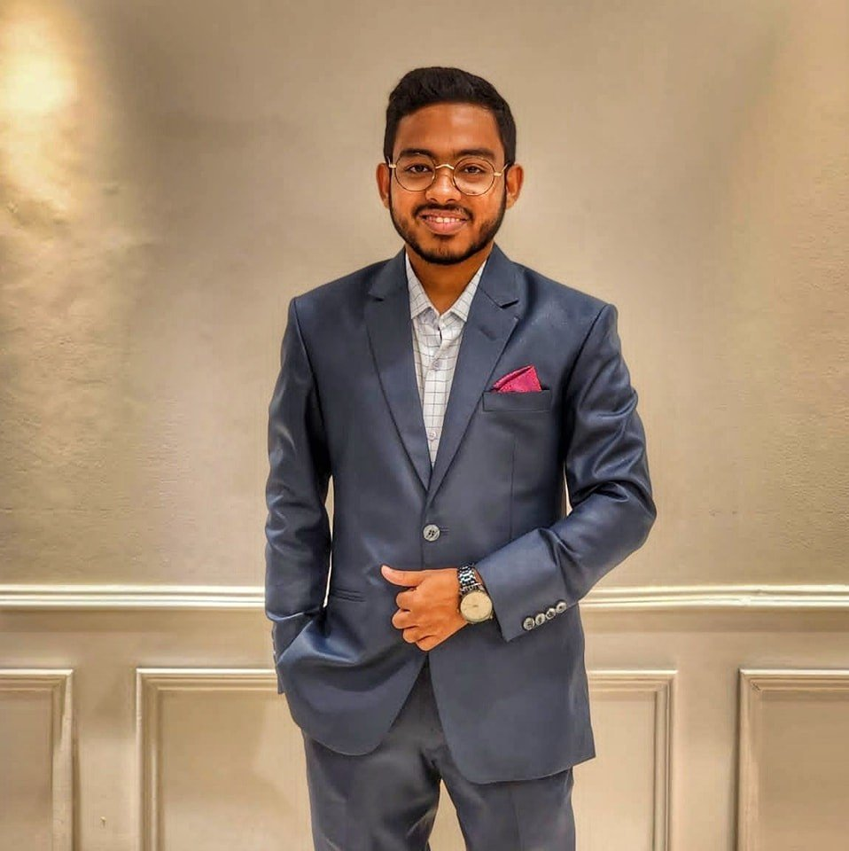

// IT Operations & Network Engineer | Cloud & DevOps
Results-driven engineer with 3+ years in telecom network operations, system reliability, and infrastructure support. Currently pursuing MIT at Charles Darwin University, based in Parramatta, NSW.

I'm a results-driven IT Operations & Network Engineer with over 3 years of experience in telecom network operations, system reliability, and infrastructure support. My background spans across L1/L2 NOC operations, cloud architecture, and DevOps practices.
With a strong foundation in Cisco networking, Linux administration, and cloud-native solutions including AWS, Docker, and Kubernetes, I bring both hands-on technical expertise and a passion for building reliable, scalable systems.
Currently completing my Master of Information Technology (Information Systems) at Charles Darwin University (Expected May 2026), I'm actively expanding into AI/ML research with published conference papers at IEEE ICCIT and Atlantis Press (Springer Nature).
📍 Parramatta, NSW, Australia | 📞 +61 468 910 545
Get a full overview of my experience, skills, education, and achievements in a professionally formatted PDF.
⬇ Download CVOpen to full-time roles, internships & contract work in IT, Networks, Cloud & DevOps across Australia.